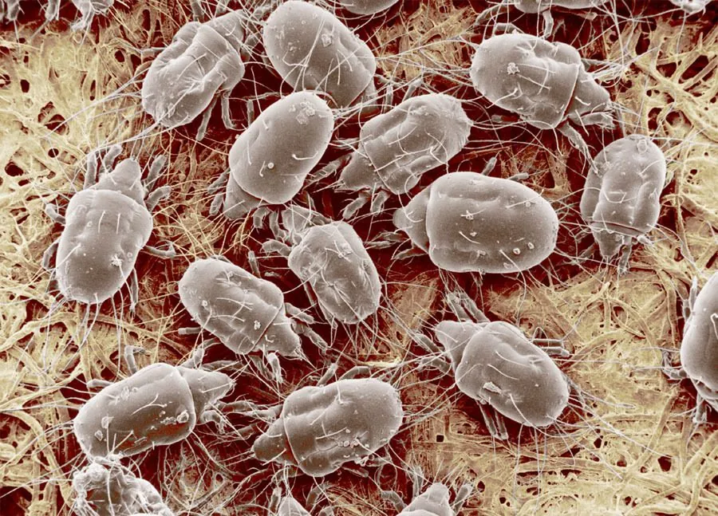

蛛形动物 · 动物界
腐食酪螨 Tyrophagus putrescentiae

常见的储藏物害螨，体长不足 1 毫米，喜欢取食霉变的谷物、奶酪和饲料，可引发过敏和皮炎，是仓储防治对象。
- 分类
- 门节肢动物门纲蛛形纲目无气门目科粉螨科属酪螨属
- 栖息环境
- 粮仓、饲料库、厨房和干酪、火腿等食品表面
- 地理分布
- 全球分布，温暖潮湿的储藏环境中常见
- 保护级别
- IUCN 暂无评估；中国未列入国家重点保护名录
物种志
腐食酪螨体长 0.3–0.5 mm，身体呈卵圆形，乳白至半透明，足短小，体表有细毛；在显微镜下可见其螯肢发达，适合取食真菌和有机碎屑。它繁殖很快，在温暖潮湿的条件下可短时间内大量出现。
它分布遍及全球，常见于粮仓、饲料库、厨房、干酪和火腿表面，取食霉菌、谷物胚芽和富含脂肪的食物。腐食酪螨不吸血，但它的尸体、蜕皮和排泄物可引发过敏，接触后可能出现皮肤瘙痒、红疹和呼吸道症状，因此被称为“食品螨”。它常与霉菌一起出现，严重污染的食品不宜食用。防治以控制湿度、低温储藏和保持清洁为主。目前 IUCN 暂无评估；中国未列入国家重点保护名录。
形态与习性
- 食性取食霉菌、谷物胚芽和富含脂肪的食物
- 体长0.3–0.5 mm
- 识别体乳白至半透明，卵圆形，足短小
- 习性喜温暖潮湿，繁殖迅速
- 危害引发过敏、皮炎，污染储藏食品
- 防治控制湿度、低温储藏、保持清洁
趣味知识
- 腐食酪螨常和霉菌一起出现，所以又叫“霉螨”。
- 它不吸血，但尸体和排泄物会让敏感人群皮肤发痒、打喷嚏。
- 把粮食和饲料保持在干燥低温环境，是防螨的关键。